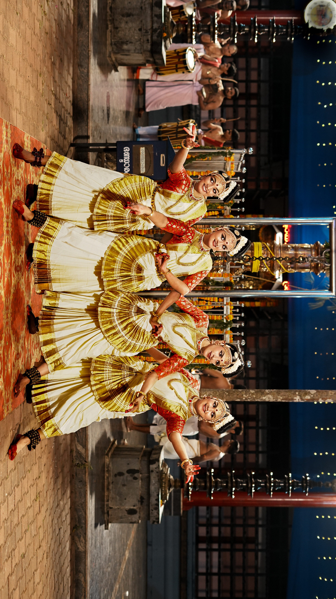
The First Frame
A performance-focused visual series built around movement, expression, colour and precise moments captured through the lens.
Role · Photographer / Visual Storyteller
I capture moments, shape stories, and turn ideas into visuals people remember.
Photography · Videography · Editing · Production · Visual Storytelling

A performance-focused visual series built around movement, expression, colour and precise moments captured through the lens.
A behind-the-scenes driven short-form piece following a day through production, camera work, locations and character moments.
A cinematic short built around physicality, movement, atmosphere and fast visual storytelling.
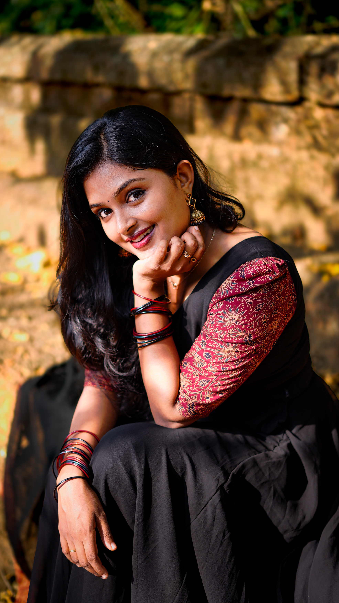
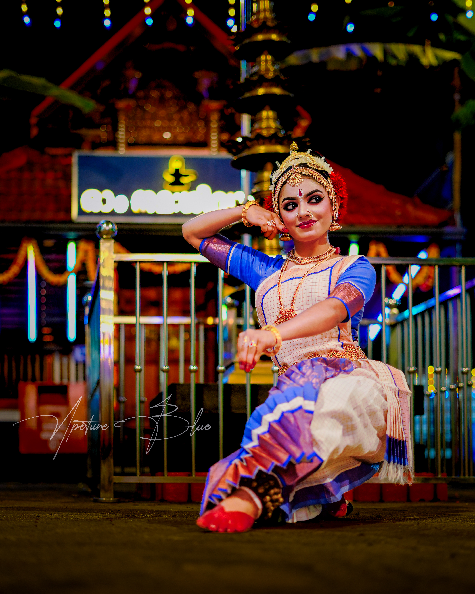
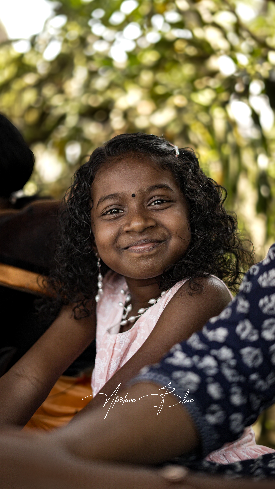
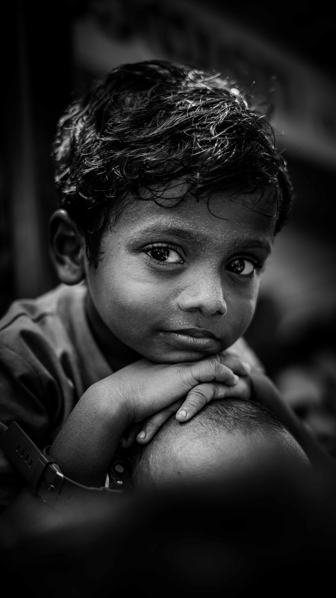
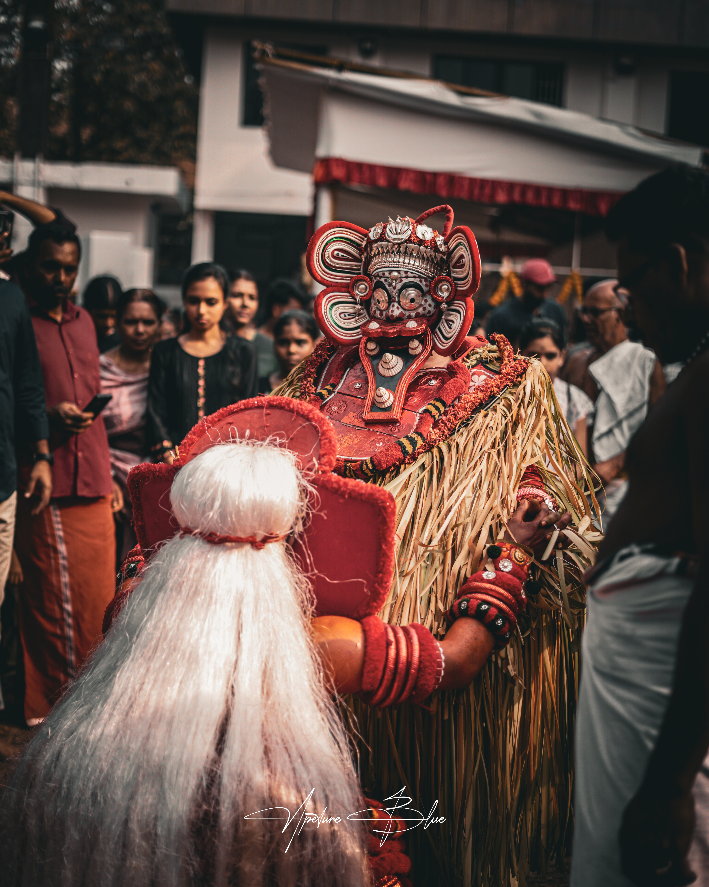
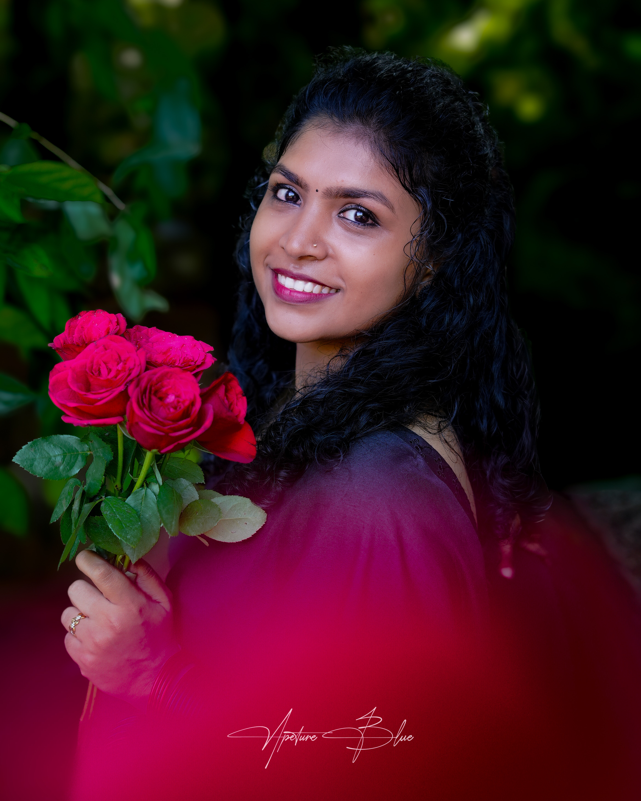
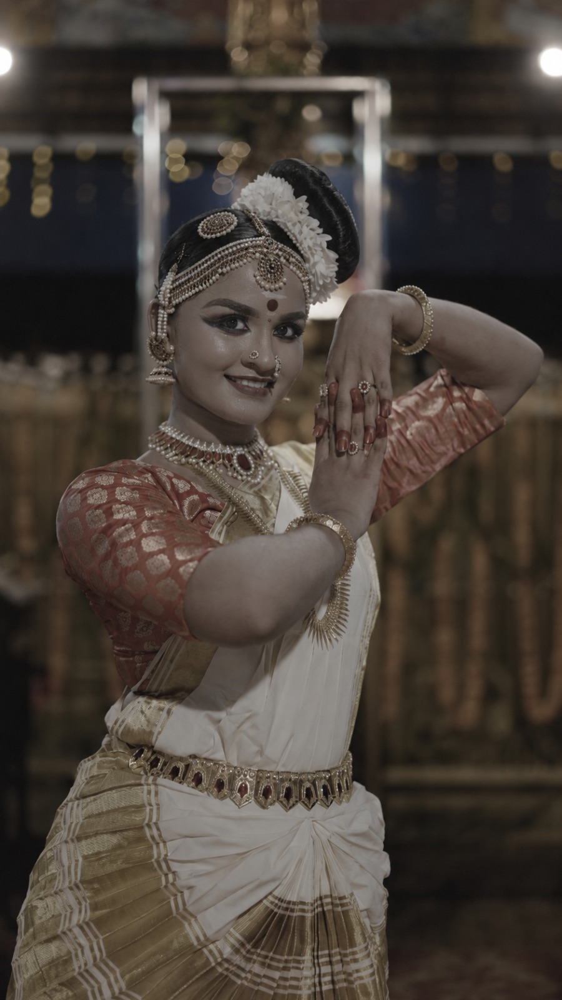
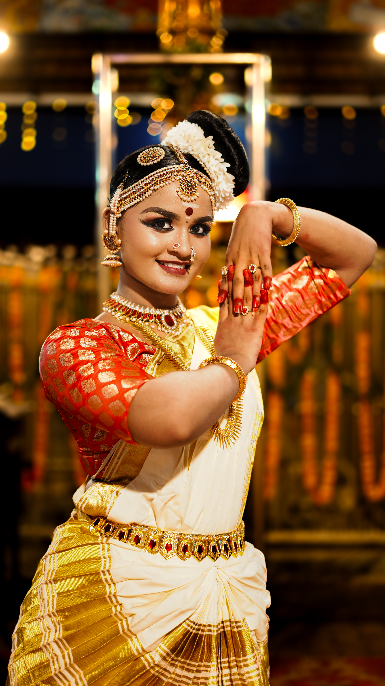
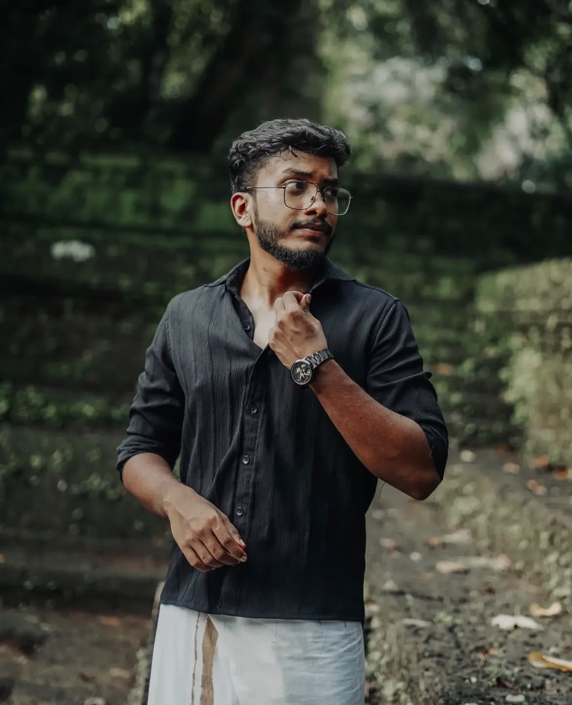
For Anugrah, visual storytelling is not just about pressing record. It is about noticing the frame, understanding the moment, shaping the footage and finding the final rhythm that makes an idea feel alive.
From production and photography to videography and editing, he works across the process to create visuals that feel intentional, human and memorable.
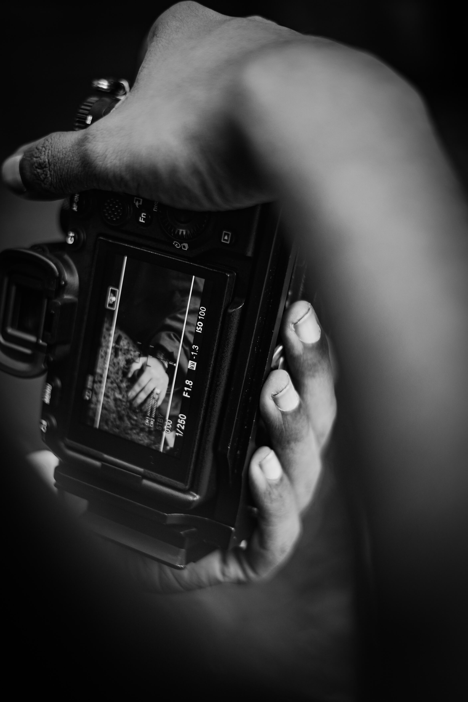
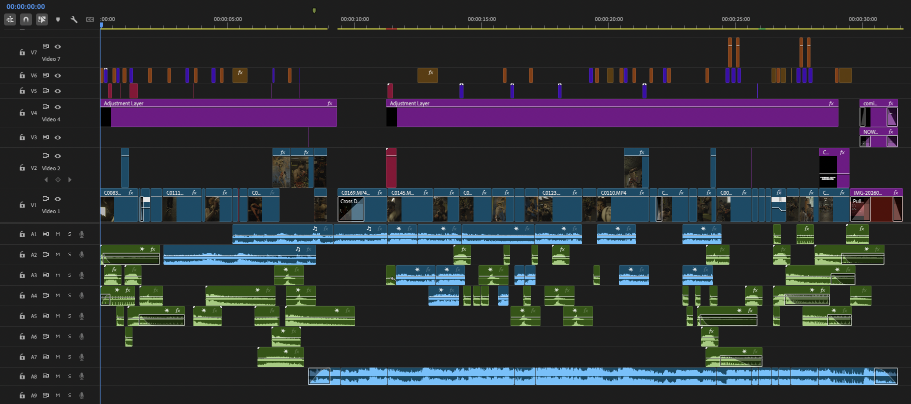
A story worth telling starts with a conversation. For productions, campaigns, photography, video or creative collaborations, get in touch.
anugrahk088@gmail.com ↗